White Rock Canyon Los Alamos, NM
Welcome
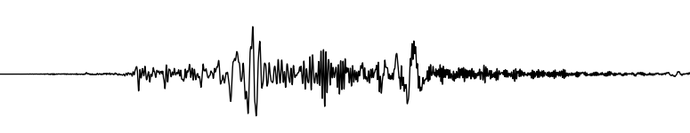I am a Feynman Distinguished Postdoctoral Fellow at Los Alamos National Laboratory trained in seismology and geodesy.
Research Interests
- Earthquake triggering
- Dynamics of seismicity
- Earthquake/weak signal detection
- Hydrogeodesy
- Surface loading & deformation
- Dense seismic array data collection/processing
- Machine learning & data analysis
Metrics
Google Scholar h-index 10
Strawberry Creek Berkeley, CA
About
After working as a diesel technician, I obtained a Bachelors Degree in Geophysics at Georgia Tech. There I was invloved in a project investigating geologic and geodetic slip rates discrepancies in Eastern CA. During my last year of undergrad studies I was a NSF Graduate Research Fellowship Program recipient and attended UC Berkeley to study seismology, geodesy, and active tectonics.
In 2017 I completed my PhD with Roland Burgmann at the Berkeley Seismological Laboratory working on projects related to triggered seismic activity from transient crustal stress changes, dynamics of siesmicity from geothermal fluid injection, surface loading, terrestrial water storage, and interseismic deformation.
In 2017 I was awarded a NSF Postdoctoral Fellowship and moved to Scripps Institution of Oceanography at UC San Diego to study earthquake detection and noise discrimination using machine learning techniques on large seismic waveform data sets. The fellowship allowed me to further broaden my knowledge in Earth Science and Geophysics, and focus on many new areas of active research in the fields of seismology and geodesy. I collaborated with Frank Vernon (UCSD/IGPP) and Yehuda Ben-Zion (USC) on projects focused on noise characterization from atmospheric coupling and signal classification by applying unsupervised learning techniques to dense seismic array data.
Currently, my position is a Feynman Distinguished Postdoctoral Fellow at Los Alamos National Laboratory. Here I am applying machine learning algorithms to investigate the properties of seismic noise for earthquake detection applications. My long-term goal is an academic or research appointment to continue investigating interesting geophysical problems and explore the dynamics of planet Earth
Joshua trees in Clayton Valley, NV
Research Topics
Large-N Seismology and Deep Learning
Dense nodal array processing using high performance computing and machine learning algorithms for exploration of shallow crustal properties and new microseismicity detection techniques. I am applying these methods to large databases of continusous seismic waveforms to produce new microseismic catalogs with focal mechanisms.
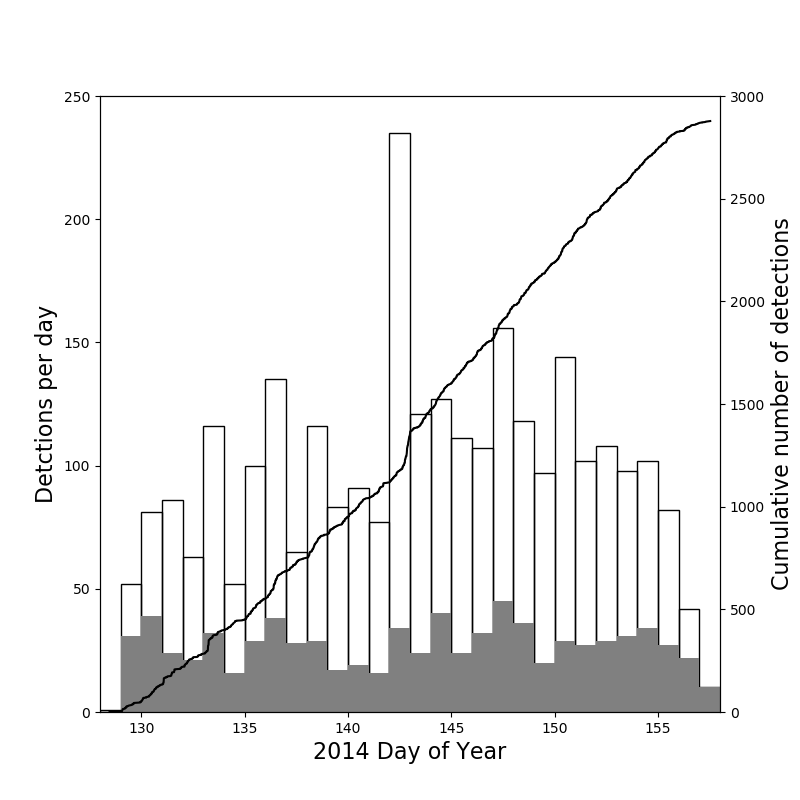Machine learning classifier for earthquake detection
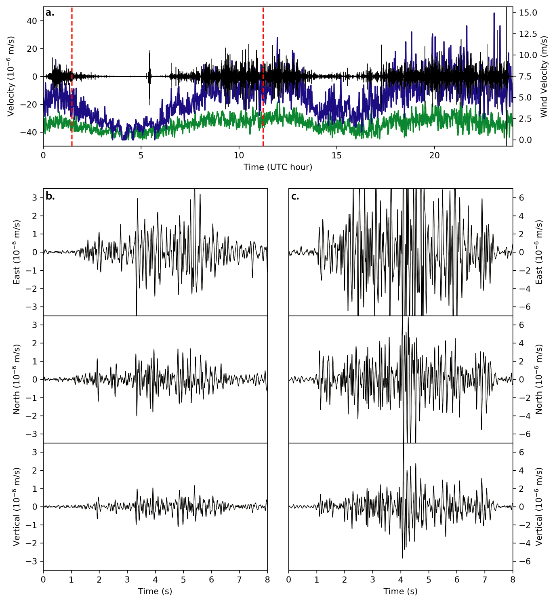Earthquake- and tremor-like signals generated by the interaction of wind with obstacles above the surface. Include these signals into learning models
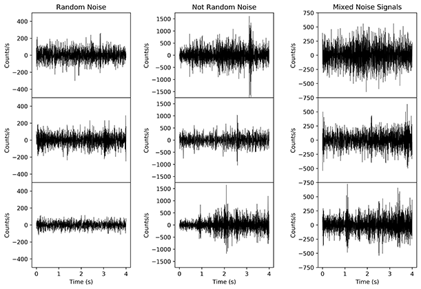Defining noise statistically for a deep learning labeled data set
Earthquake Triggering
Spatiotemporal variations in seismic activity, clustering, and triggering provide insight to the evolving state of stress in the crust. I continue to investigate the stress variations in the crust from atmospheric coupling, water loading, and earthquake interaction.
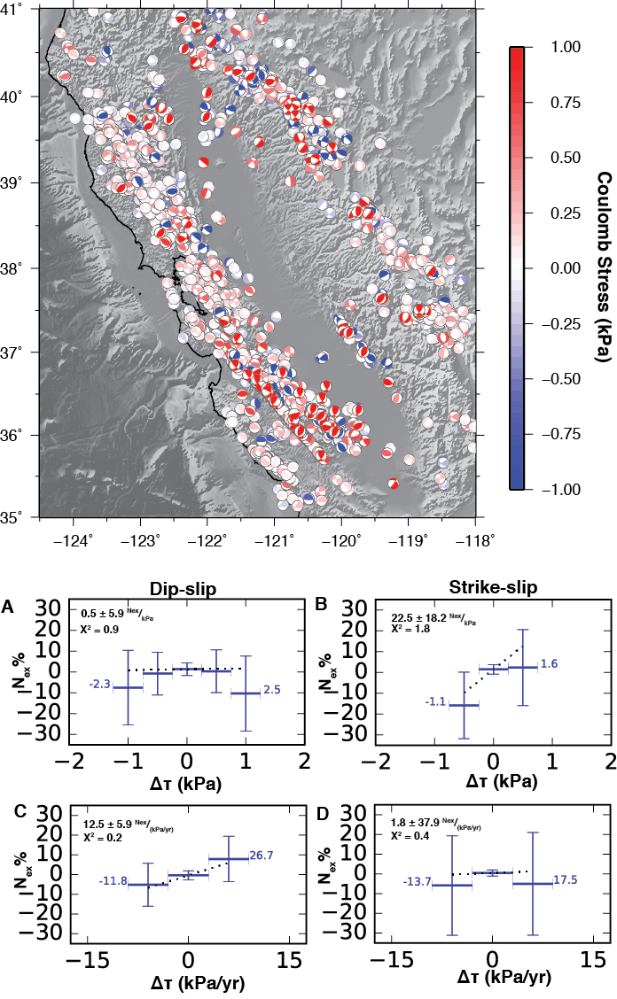Climate modulated water storage, the deformation, and California earthquakes
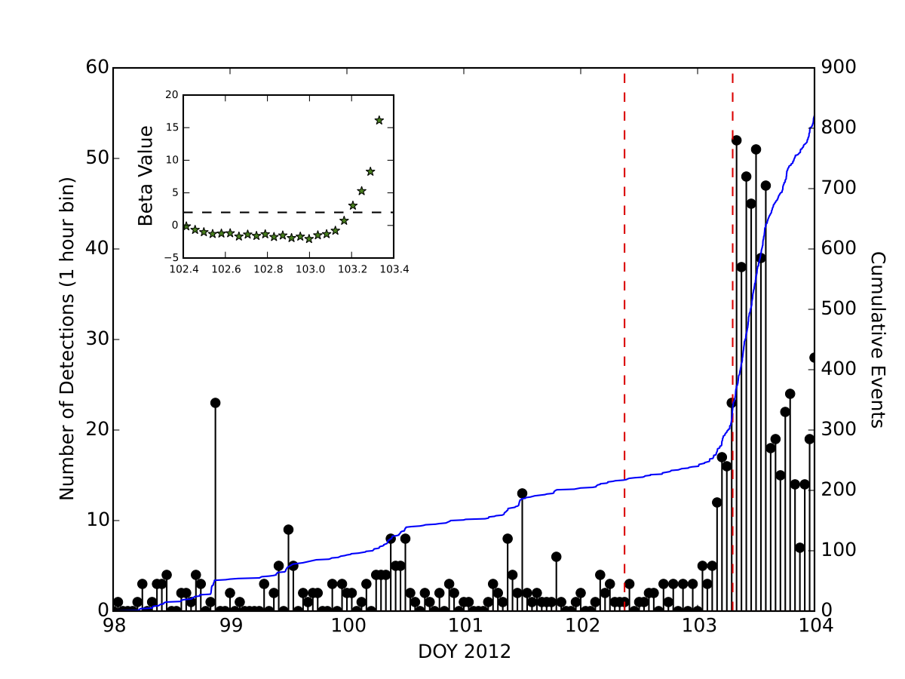Delayed dynamic triggering: Local seismicity leading up to three remote M≥6 aftershocks of the 11 April 2012 M8.6 Indian Ocean earthquake
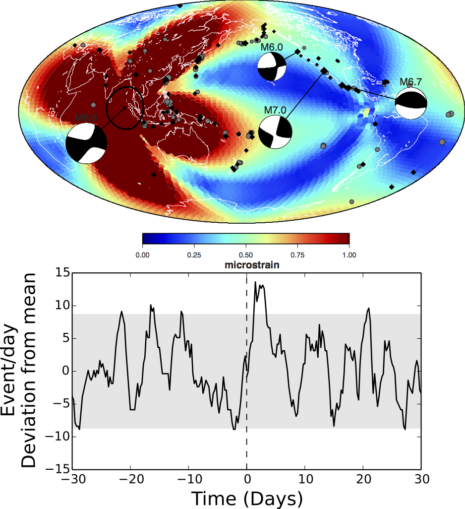Global catalog analysis shows that dynamic triggering of remote M≥5.5 earthquakes is rare

Depth migration of seasonally induced seismicity at The Geysers Geothermal Field
Surface Loading / Hydrogeodesy
Atmosphere, hydrosphere, thermal variations, and tides all deform the crust elastically and can modulate the stresses on active faults. I am working to further characterize loading in the Central Valley and exploring different tectonic environments using GRACE and GRACE-FO data sets to contrain transient stress chagnes.
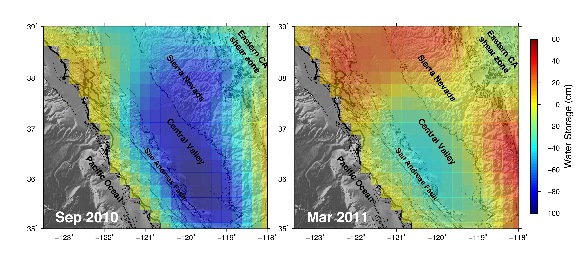Geodetically Derived Terrestrial Water Storage and Transient Loading
Seasonal stress modulation on active California fault structures
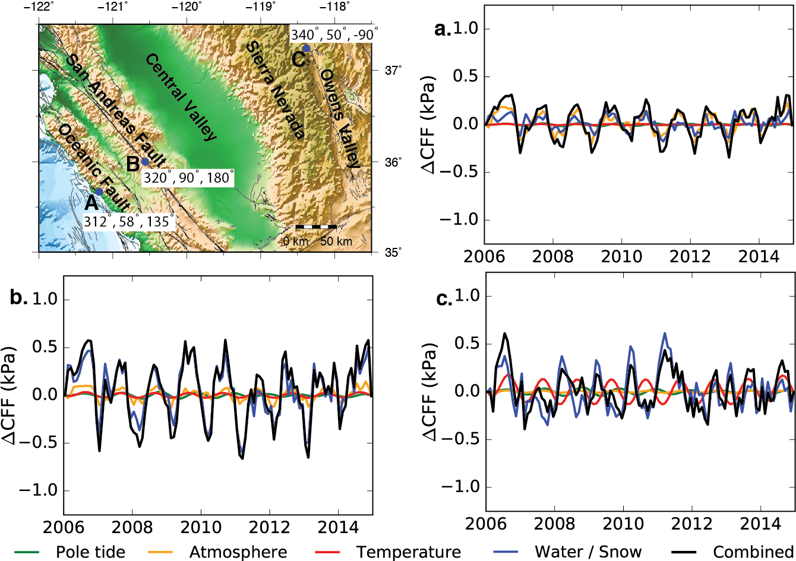Stress models of the annual hydrospheric, atmospheric, thermal, and tidal loading cycles on California faults
Interseismic Loading
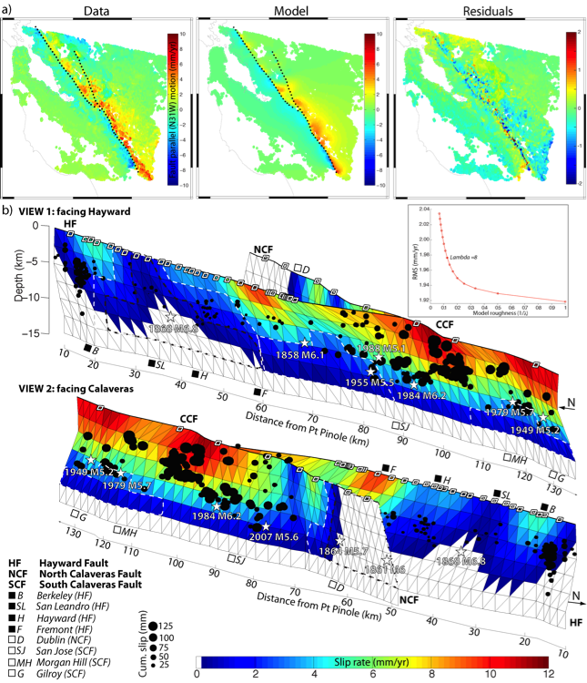Interseismic coupling and refined earthquake potential on the Hayward-Calaveras fault zone
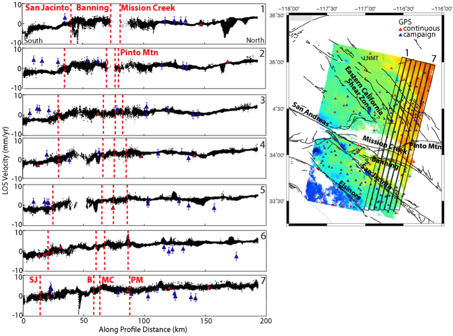Potential and limits of InSAR to characterize interseismic deformation independently of GPS data: application to the southern San Andreas Fault system
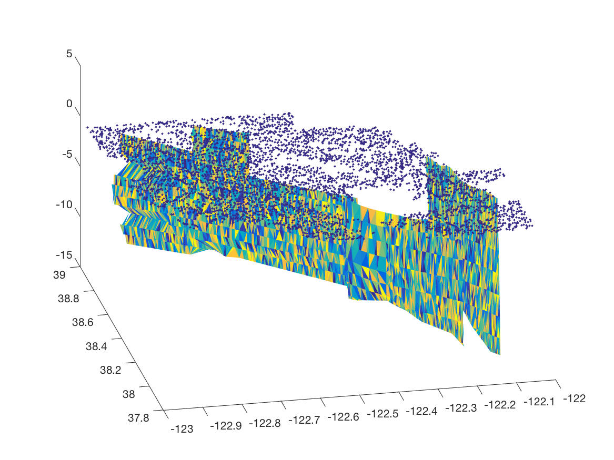Interseismic coupling of major faults in the North San Francisco Bay Area from InSAR, GPS and seismic data

Insights into distributed plate rates across the Walker Lane from GPS geodesy
Jedediah Smith Redwoods State Park, CA
CV
Education and Appointments
Los Alamos National Laboratory 2020 - present
Richard P. Feynman Postdoctoral Fellow, 2020 - 2023
EES-17 Geophysics
Los Alamos, New Mexico
NSF Postdoctoral Fellow 2017 - 2020
Scripps Institution of Oceanography
Institute of Geophysics and Planetary Physics
University of California, San Diego
NSF Graduate Research Fellowship Program 2012-2017
Ph.D. 2017 Berkeley Seismological Laboratory
University of California, Berkeley, CA
Dissertation: Stress modulation of earthquakes: A study of long and short period stress perturbations and the crustal response
Undergraduate
B.Sc. 2012, Highest Honors, GPA: 4.0
School of Earth and Atmospheric Sciences
Georgia Institute of Technology
Undergraduate Thesis: Measuring Present-Day Strain Rates along the Fish Lake Valley Fault System, Pacific-North America Plate Boundary
Awards and Honors
Feynman Distinguished Postdoctoral Fellowship, 2020-2023
National Science Foundation Postdoctoral Research Fellowship, 2017-2019
Louderback Award, Earth and Planetary Science, UC Berkeley, 2017
National Science Foundation Graduate Research Fellowship Program, 2012-2017
Rutt Bridges Research Initiative Award, Undergraduate initiated research salary, 2011
Presidential Undergraduate Research Award, Undergraduate initiated research salary, 2011
Anadarko/SEG Tuition Scholarship, 2011 – 2012
Georgia Hope Scholar, full tuition scholarship, 2008 – 2011
Invited Talks
GAGE/SAGE 2020 Science Workshop, Breckenridge, CO, Aug 2020 CANCELED COVID-19
Japan Geoscience Union Meeting 2020, Chiba, Japan, May 2020 CANCELED COVID-19
University of Southern California, Los Angeles, CA, November 2019
Los Alamos National Lab, Los Alamos, NM, July 2019
California Institute of Technology, Pasadena, CA, July 2019
University of Grenoble Alpes, Grenoble, France, June 2019
IGPP, UC SanDiego, San Diego, CA, April 2019
IRIS Workshop 2018, Albuquerque, New Mexico, June 2018
Japan Agency for Marine-Earth Science and Technology (JAMSTEC), Yokohama, Japan, May 2018
Japan Geoscience Union Meeting 2018, Chiba, Japan, May 2018
IGPP, UC SanDiego, San Diego, CA, Feb 2018
Department of Geological Sciences, University of Florida, Gainesville, FL, Feb 2018
American Geophysical Union Fall Meeting 2017, New Orleans, LA, Dec 2017
Institute of Earth Sciences, Academia Sinica, Taipei, Taiwan. Keynote Speaker, Sept 2017
Dept. of Earth Sciences, National Taiwan Normal Univ., Taipei, Taiwan, Sept 2017
Lawrence Berkeley National Lab. Berkeley, CA, July 2017
Computation in Geophysics Workshop. Denver, CO, June 2017
EarthScope National Meeting. Anchorage, AK, May 2017
Department of Geological Sciences, University of Texas at Austin. Austin, TX, April 2017
Collaborators
Yehuda Ben-Zion, Uni. of Southern California, Los Angeles
Adrian Borsa, Uni. of California, San Diego
Florent Brenguier, Uni. of Grenoble Alpes, Grenoble, France
Roland Bürgmann (PhD Advisor), Uni. of California, Berkeley
Estelle Chaussard, Uni. of Oregon, Eugene, Oregon
Kate Chen, National Taiwan Normal Uni.
Pierre Dutilleul, McGill Uni., Montreal, Canada
Yuning Fu, Bowling Green State Uni., Ohio
Peter Gerstoft, Uni. of California, San Diego
Paul Johnson, Los Alamos Nat. Lab., New Mexico
Debi Kilb, Uni. of California, San Diego
Frank Vernon, Uni. of California, San Diego
Skills
Computing: Python, Matlab, Fortran, C, BASH
Data processing: ObsPy, Tensorflow/Keras, SAC, ISCE
Document / Presentation: Adobe, Office platform, Overleaf
Language: English (native), Spanish (can communicate)
Additional: ASE Master Level Technician Medium/Heavy Trucks (2003-2008)
Alabama Hills Owens Valley, CA
Publications
Google Scholar h-index 10
In review
Snover, D., Johnson, C.W., Bianco, M.J., Gerstoft, P. (in SRL review) Deep clustering to identify sources of urban seismic noise in Long Beach, CA
Johnson, C.W., Ben-Zion, Y., Meng, H., Vernon, F.L. (in GRL review), Identifying different classes of seismic noise signals using unsupervised learning
Johnson, C.W., D. Kilb, A. Baltay, and F. Veron (in JGR review), Peak ground velocity spatial variability revealed by dense seismic array in southern California
Dutilleul, P.R.L., C.W. Johnson, R. Bürgmann (in EEST review) Marked spatio-temporal point patterns, periodicity analysis and earthquakes: an analytical extension including hypocenter depth.
Cheng, Y., Ben-Zion, Y., Brenguier, F., Johnson, C. W., Li, Z., Share, P., Mordret, A., Boué, P., Vernon F.L. (in SRL review) Automated method for developing catalog of small earthquakes using data of dense seismic array and nearby stations.
2020
[24] Xue, L., C.W. Johnson, Y. Fu and R. Bürgmann (2020) Seasonal seismicity in the Western Branch of the East African Rift System, Geophys. Res. Lett.,47, doi:10.1029/2019GL085882 Link
[23] Johnson, C. W., Y. Fu, and R. Bürgmann (2020), Hydrospheric modulation of stress and seismicity on shallow faults in southern Alaska. Earth and Planetary Science Letters, doi:10.1016/j.epsl.2019.115904 Link
2019
[22] Brenguier, F., Boué, P., Ben-Zion, Y., Vernon, F., Johnson, C. W., Mordret, A., et al. (2019) Train traffic as a powerful noise source for monitoring active faults with seismic interferometry. Geophysical Research Letters. doi:10.1029/2019gl083438 Link
[21] Meng, H., Y. Ben-Zion, C.W. Johnson (2019) Detection of random noise and anatomy of continuous seismic waveforms in dense array data near Anza California. Geophysical Journal International. doi:10.1093/gji/ggz349 Link
[20] Johnson, C.W., H. Meng, F.L. Vernon, and Y. Ben-Zion (2019) Characteristics of ground motion generated by interaction of wind gusts with trees, structures and other obstacles above the surface. Journal of Geophysical Research: Solid Earth, 124. doi:10.1029/2018jb017151 Link
[19] Qin, L., F.L. Vernon, C.W. Johnson, and Y. Ben-Zion (2019) Spectral characteristics of daily to seasonal ground motions using coherences at the Piñon Flats Observatory.Bulletin of the Seismological Society of America doi: https://doi.org/10.1785/0120190070 Link
[18] Johnson, C.W., F.L. Vernon, N. Nakata, and Y. Ben-Zion (2019) Atmospheric Processes Modulating Noise in Fairfield Nodal 5 Hz Geophones. Seismological Research Letters, https://doi.org/10.1785/0220180383 Link
2018
[17] Xu, W., Wu, S., Materna, K., Nadeau, R., Floyd, M., Funning, G., Chaussard, E., Johnson, C.W., Murray, J.R., Ding, X., Bürgmann, R. (2018) Interseismic ground deformation and fault slip rates in the greater San Francisco Bay Area from two decades of space geodetic data. Journal of Geophysical Research: Solid Earth, 123. https://doi.org/10.1029/2018JB016004 Link
[16] Chen, K. H., Tai, H.‐J., Ide, S., Byrne, T., Johnson, C. W. (2018). Tidal modulation and tectonic implications of tremors in Taiwan. Journal of Geophysical Research: Solid Earth, 123. https://doi.org/10.1029/2018JB015663 Link
[15] Xue, L., R. Bürgmann, D.R. Shelly, C.W. Johnson, T. Taira (2018) Kinematics of the 2015 San Ramon, California earthquake swarm: Implications for fault zone structure and driving mechanisms. Earth and Planetary Science Letters, 489. doi.org/10.1016/j.epsl.2018.02.018 Link
[14] M.T. Ramírez-Herrera, K. Gaidzik, S. Forman, V. Kostoglodov, R. Bürgmann, C.W. Johnson (2018) Relating the long-term and short-term vertical deformation across a transect of the forearc in the central Mexican subduction zone. Geosphere; 14 (2): 419–439. doi: https://doi.org/10.1130/GES01446.1 Link
2017
[13] Johnson, C. W., Y. Fu, and R. Bürgmann (2017), Stress models of the annual hydrospheric, atmospheric, thermal, and tidal loading cycles on California faults: Perturbation of background stress and changes in seismicity, Journal of Geophysical Research: Solid Earth, 122. https://doi.org/10.1002/2017JB014778 Link
[12] Han, L., Z. Peng, C.W. Johnson, F.F. Pollitz, L. Li, B. Wang, J.Wu, Q. Li (2017) Shallow microearthquakes near Chongqing, China triggered by the Rayleigh waves of the 2015 M7.8 Gorkha, Nepal earthquake, EPSL, doi:10.1016/j.epsl.2017.09.024. Link
[11] Johnson, C. W., Y. N. Fu, and R. Burgmann (2017), Seasonal water storage, stress modulation, and California seismicity, Science, 356(6343), 1161-1164, doi:10.1126/science.aak9547. Link
[10] Delbridge, B.G, S. Kita, N. Uchida, C. W. Johnson, T. Matsuzawa, and R. Bürgmann (2017), Temporal variation of intermediate depth earthquakes around the time of to the M 9.0 Tohoku-Oki earthquake, Geophysical Research Letters, doi:10.1002/2017GL072876. Link
2016
[9] Johnson,C.W., E.J.Totten, and R. Bürgmann (2016), Depth migration of seasonally induced seismicity at The Geysers geothermal field, Geophys. Res. Lett., 43,6196–6204, doi:10.1002/2016GL069546. Link
[8] Chaussard, E., C. W. Johnson, H. Fattahi, and R. Bürgmann (2016), Potential and limits of InSAR to characterize interseismic deformation independently of GPS data: application to the southern San Andreas Fault system, Geochemistry, Geophysics, Geosystems. Link
2015
[7] Johnson, C. W., and R. Bürgmann (2015), Delayed dynamic triggering: Local seismicity leading up to three remote M≥6 aftershocks of the 11 April 2012 M8.6 Indian Ocean earthquake, J. Geophys. Res. Solid Earth, 120, doi:10.1002/2015JB012243. Link
[6] Dutilleul, P., C. W. Johnson, R. Bürgmann, Y. Wan, and Z.-K. Shen (2015), Multi-frequential periodogram analysis of earthquake occurrence: An alternative approach to the Schuster spectrum, with two examples in central California, J. Geophys. Res. Solid Earth, 120, doi:10.1002/2015JB012467. Link
[5] Chaussard, E., R. Bürgmann, H. Fattahi, C. W. Johnson, R. Nadeau, T. Taira, and I. Johanson (2015), Interseismic coupling and refined earthquake potential on the Hayward-Calaveras fault zone, J. Geophys. Res. Solid Earth, 120, doi:10.1002/2015JB012230. Link
[4] Chaussard, E, R Bürgmann, H Fattahi, RM Nadeau, T Taira, CW Johnson, and I Johanson (2015), Potential for larger earthquakes in the East San Francisco Bay Area due to the direct connection between the Hayward and Calaveras Faults. Geophys. Res. Lett., 42, 2734–2741. doi: 10.1002/2015GL063575. Link
[3] Johnson, C. W., R. Burgmann, and F. F. Pollitz (2015), Rare dynamic triggering of remote M≥5.5 earthquakes from global catalog analysis, Journal of Geophysical Research: Solid Earth, 120, doi:10.1002/2014JB011788. Link
2013
[2] Lifton, Z.M., A. V. Newman, K. L. Frankel, C.W. Johnson, and T. H. Dixon (2013), Insights into distributed plate rates across the Walker Lane from GPS geodesy, Geophys. Res. Lett., 40, doi:10.1002/grl.50804. Link
2012
[1] Foy, T. A., K. L. Frankel, Z. M. Lifton, C. W. Johnson, M. W. Caffee (2012), Distributed extensional deformation in a zone of right-lateral shear: Implications for geodetic versus geologic rates of deformation in the eastern California shear zone-Walker Lane, Tectonics, 31, TC4008, doi:10.1029/2011TC002930. Link
Eureka Dunes, Death Valley, CA
Media Coverage
Kornei, K. (2019), Wind-triggered ground shaking masks microseismicity, Eos, 100, https://doi.org/10.1029/2019EO130989. Published on 20 August 2019. Link
Seasonal water changes may trigger earthquakes, UC Berkeley researchers say, Jana Katsuyama, KTVU, 06/16/2017
Something You Probably Didn’t Expect From the Huge Sierra Snowpack: Earthquakes, Craig Miller, NPR station KQED, 06/15/2017 Link
San Andreas Fault Earthquakes Are Triggered by Winter Rain and Snow, Scientists Discover, Hannah Osborne, Newsweek, 06/15/2017 Link
Shifting water weight can trigger small earthquakes in California, Warren Cornwall, Sciencemag, 06/15/2017 Link
Rain and snow help stress out earthquake faults, A little bit, Mary Beth Griggs, Popular Science, 06/15/2017 Link
How Rain and Snow Could Play a Role in Triggering Earthquakes, John Perritano, How Stuff Works, 06/22/2017 Link
Snow and rain tug on earthquake faults in California, Maria Temming, Science News, 07/03/2017 Link
UNAVCO March 2016 Annual Workshop Ingite Talk
Outreach
Instructor for Sally Ride Science, UC San Diego Extension
Library NExT Instructor for pre-college classes hosted at San Diego public libraries 2018-2019
Sally Ride Science Junior Academy One-week summer program instructor Summer 2018. Being an instructor for SRS is a rewarding experince that provides the opportunity to interact with middle and high students. We explore topics on geology in California, discuss geophysics and the educational training necessary to pursue careers in science and engineering, and perform experiments to demonstate the basics of faulting and earthquakes.
Birch Aquarium 2018 ShakeOut!
Interact with guests to explain the ShakeOut program and hazards associeted with strong ground shaking
EPS Department Coordinator for Bay Area Science in Schools outreach program organized by Community Resources for Science (crscience.org) from 2015-2017.
Travel to local middle schools, with a focus on underrepresented communities, and give 1-2 hour lessons with a lab component on earthquake faulting, liquefaction, and safety.
Provide professional development seminars for elementary and middle school teachers covering general Earth science and earthquake safety.
Lead activities for the Berkeley Seismological Laboratory outreach program for visitors.
Bristlecone Pines White Mountains, CA
Field Work
Select images from the field
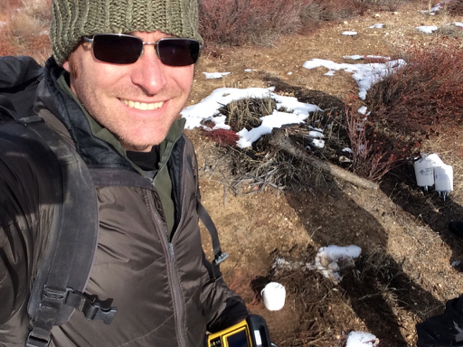 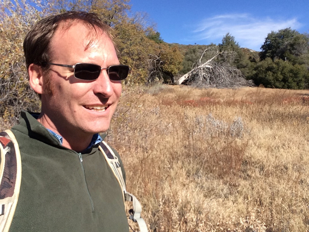2019 geophone campaign Tule Canyon and Palomar Mnt
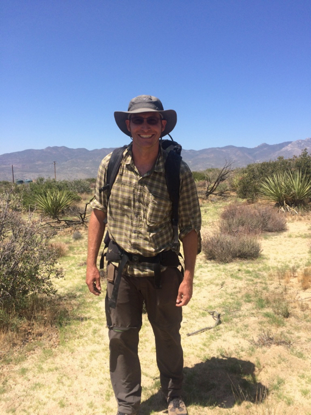 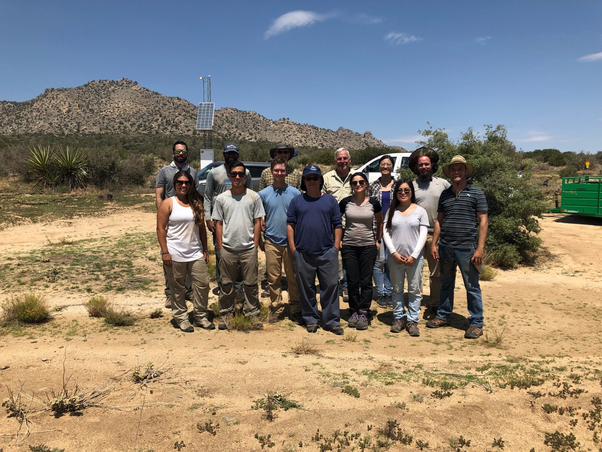2018 field campaign deploying 400 geophones at Piñon Flat Observatory
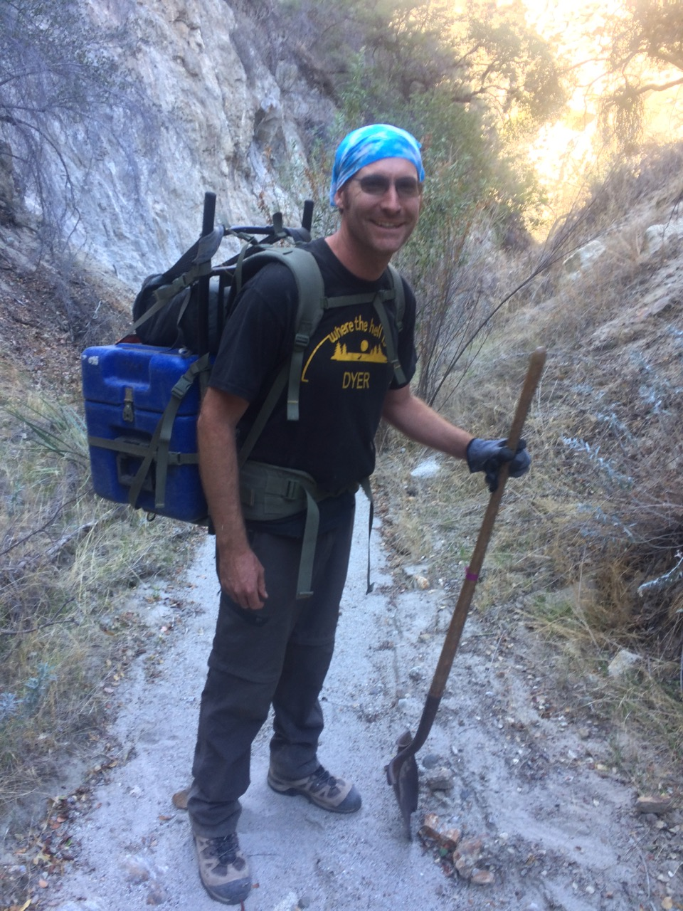2018 San Jacinto Fault Zone seismometer maintence
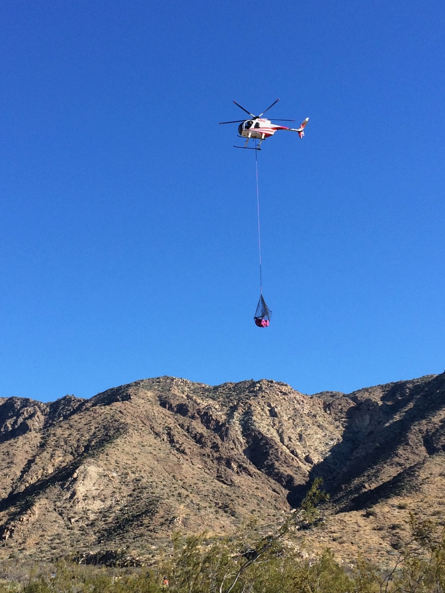2017 Dry Wash on San Jacinto Fault Zone. Removal of 5 year temporary seismometer deployment
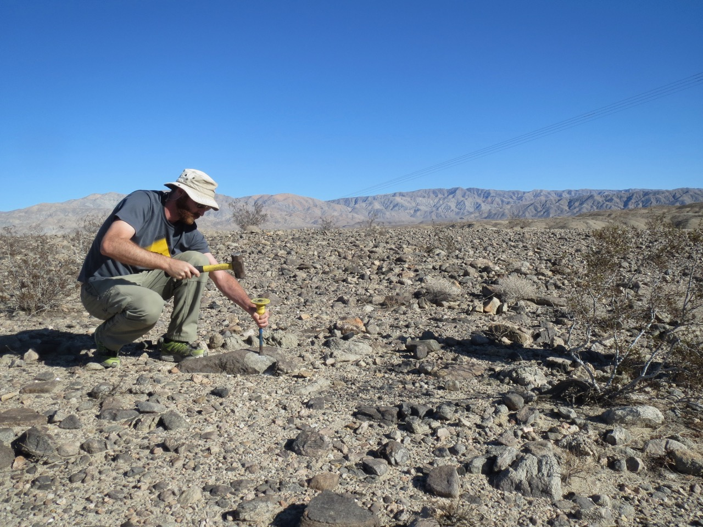2013 San Jacinto Fault Zone geochronology survey
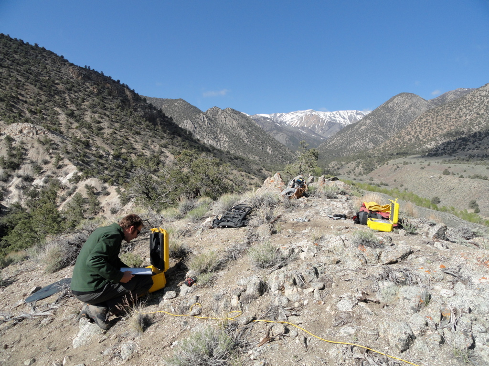 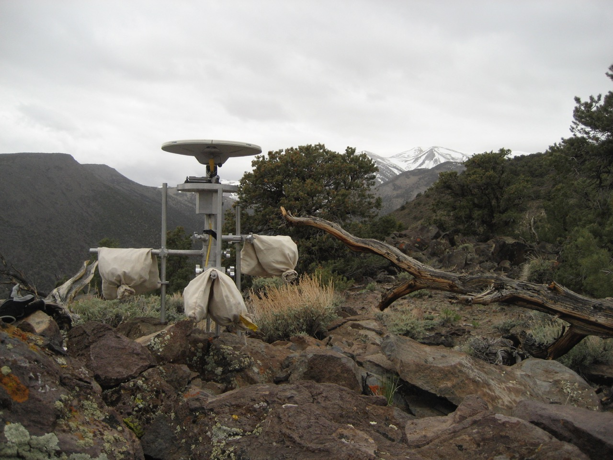2010-2012 GPS campaign around the White Mountains and Fish Lake Valley Fault
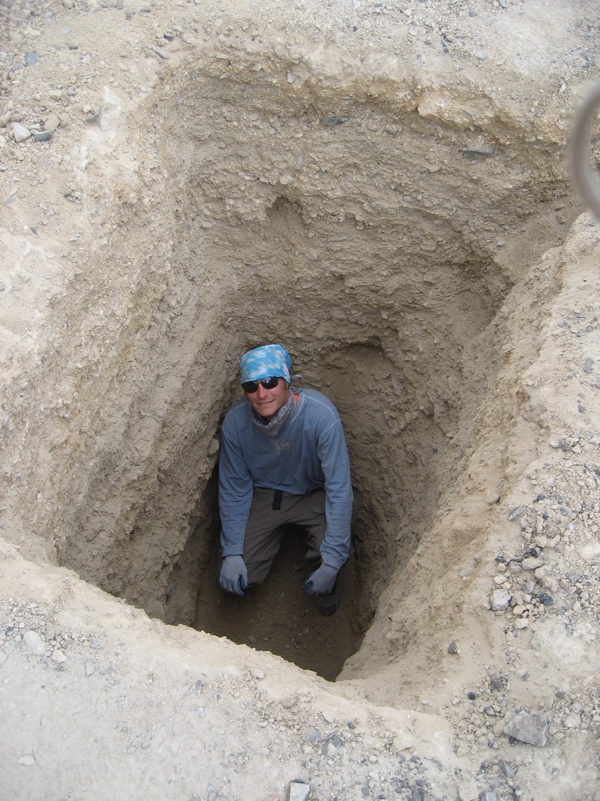2010 Clayton Valley geochronology survey